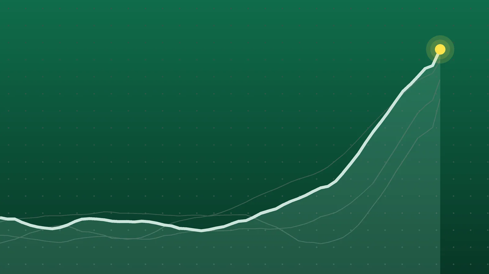

SportsExplainer
Europa League Scores, Oct. 22: Bournemouth Beat 10-Man Milan 3-0
Bournemouth made it three wins from three against a Milan side that lost its goalkeeper to a red card. Five clubs are now perfect, and Leverkusen still haven’t conceded.

Quick take
- Bournemouth beat AC Milan 3-0 with two first-half penalties and a late free kick after Milan goalkeeper Mike Maignan was sent off.
- Crystal Palace drew 2-2 at Beşiktaş, and Celtic lost 2-1 at home to Celta Vigo.
- Bournemouth, Benfica, Leverkusen, Ferencváros and Olympiacos have won all three of their games.
- All 18 matches finished. Matchday 4 is Thursday, Nov. 5.
Why it's trending Eighteen UEFA Europa League league-phase matches on Thursday, Oct. 22, made up Matchday 3.
Europa League scores for Oct. 22
Bournemouth beat AC Milan 3-0 on Thursday to stay perfect in the Europa League, and the seven-time European champions played most of the night a man down. Milan goalkeeper Mike Maignan was sent off just before the half-hour for shoving Tyler Adams in the face, and Bournemouth scored from the spot twice in the first half before Amine Adli added a late free kick, TNT Sports reported.
The other English clubs had mixed nights. Crystal Palace came from behind to lead at Beşiktaş in Istanbul, then were pegged back to 2-2, while Sunderland drew 1-1 at Lech Poznań to stay unbeaten. In Scotland, Celtic lost 2-1 at home to Celta Vigo. All 18 matches of Matchday 3 finished, UEFA’s round-up shows.
All final scores
| Home | Score | Away | Note |
|---|---|---|---|
| Lech Poznań | 1-1 | Sunderland | Lech’s first point of the league phase |
| OFI Crete | 0-2 | Bayer Leverkusen | Two goals from Jonas Hofmann, three minutes apart |
| Ferencváros | 4-1 | Torreense | Ferencváros are 3-0-0 |
| Sturm Graz | 1-0 | Marseille | Oumar Diakité scored in the 13th minute |
| Dinamo Zagreb | 2-4 | NEC Nijmegen | Bryan Linssen scored twice |
| Union SG | 4-0 | Hapoel Beer-Sheva | Guilherme Smith scored twice |
| Ararat-Armenia | 0-4 | AZ Alkmaar | Weslley Patati scored twice |
| Juventus | 2-2 | Rennes | Nick Woltemade’s penalty kept Juve unbeaten |
| Bournemouth | 3-0 | AC Milan | Maignan sent off; two penalties and a free kick |
| Beşiktaş | 2-2 | Crystal Palace | Beşiktaş finished with 10 men |
| Celtic | 1-2 | Celta Vigo | Javi Rodríguez scored twice in the second half |
| Viktoria Plzeň | 1-2 | Levski Sofia | Reinaldo scored the winner in the 65th minute |
| Jagiellonia | 0-3 | Anderlecht | Jayden Onia Seke, 17, scored the third |
| Lillestrøm | 0-6 | Real Sociedad | Biggest win of the night |
| Celje | 2-2 | Red Bull Salzburg | Celje equalized in the 90th minute after trailing 2-0 |
| Olympiacos | 1-0 | Sparta Prague | A 78th-minute own goal decided it |
| Omonia | 1-4 | Benfica | Benfica are 3-0-0 |
| Hoffenheim | 3-0 | Lyon | Andrej Kramarić scored and starred |
Home teams won six, drew four and lost eight.
Bournemouth 3-0 Milan
The game turned before the half-hour mark. Justin Kluivert put Bournemouth ahead with an eighth-minute penalty after an Evanilson header struck a raised arm. Then Maignan was shown a straight red for pushing Adams, and Marcus Tavernier scored the second penalty in the 32nd minute after a video review upheld the call. Adli curled in a free kick in the 84th to finish it.
TNT Sports ranked the win among the best nights the club has ever had. It leaves Bournemouth with nine points from three games, level with the four other clubs that have won every game.
Beşiktaş 2-2 Crystal Palace
Wilfred Ndidi gave Beşiktaş the lead in first-half stoppage time. Palace flipped the game within five minutes of the restart: Yeremy Pino scored in the 51st after a video review cancelled an offside call, and Jean-Philippe Mateta struck in the 55th for his first goal since last season’s Conference League final, Sky Sports reported.
Substitute Junior Olaitan leveled for Beşiktaş in the 73rd minute. Five minutes later the home side’s Ümit Akdağ was sent off for a two-footed tackle on Jørgen Strand Larsen, who later went off hurt, but Palace couldn’t find a winner. The point ended Palace’s two-game losing run.
Hoffenheim 3-0 Lyon
Hoffenheim, who had no points before Thursday, beat the side that leads France’s Ligue 1. Kramarić scored shortly before halftime, Adam Daghim added a second four minutes into the second half, and Adam Hložek made it 3-0 in the 83rd, dpa reported.
What it means
Each club plays eight league-phase games, so after three there are five to go. Five teams have the maximum nine points: Bournemouth, Benfica, Leverkusen, Ferencváros and Olympiacos. Leverkusen are the only club yet to concede a goal, UEFA said.
Juventus and Sunderland are also unbeaten. Under the league-phase format, the top eight go straight to the round of 16 and teams ranked ninth to 24th enter a playoff round, so a club with five games left still has plenty of room to recover from a slow start. That matters for Celtic, who let a 1-0 lead slip at home when Celta scored twice in a three-minute span midway through the second half, according to Celtic’s own match report.
The scoring was heavy. The 18 matches produced 63 goals, 3.5 a game, with Real Sociedad’s 6-0 win in Norway the biggest margin.
What’s next
Matchday 4 is Thursday, Nov. 5. With Europe and the U.S. both back on standard time by then, kickoffs will be 12:45 p.m. and 3 p.m. ET. Olympiacos, one of the five perfect teams, travel to Rennes.
Sources
- UEFA Europa League Matchday 3 round-up: Bournemouth beat Milan, Beşiktaş and Palace draw thrillerOct. 22, 2026
- TNT Sports Bournemouth 3-0 AC Milan – UEFA Europa League result as classy Cherries dominate European giants, with Mike Maignan shown straight redOct. 22, 2026
- Sky Sports Besiktas 2-2 Crystal Palace: Jean-Philippe Mateta and Yermey Pino strike but Palace forced to settle for Europa League draw in IstanbulOct. 22, 2026
- dpa via Yahoo Sports Kramaric shines as Hoffenheim stun Lyon in the Europa LeagueOct. 22, 2026
- Celtic FC via Yahoo Sports Europa League defeat at home for Celtic against Celta VigoOct. 22, 2026
- The Sports Encounter Europa League: Marseille Lose Again as Leverkusen and Ferencváros Stay Perfect; Juventus Held by RennesOct. 22, 2026
- Fox Sports Viktoria Plzen vs. Levski Sofia - Final Score - October 22, 2026Oct. 22, 2026
Keep reading

Premier League Scores, Oct. 25: Bournemouth Rout Man United 3-0
Premier League scores for Oct. 25, 2026: Bournemouth won 3-0 at Man United, Liverpool beat Brighton 2-0, Newcastle won at Palace, plus two draws.

Champions League Scores, Oct. 21: Rice Rescues Arsenal at Bayern
Champions League scores for Oct. 21, 2026: all nine Matchday 3 results, from Bayern 2-2 Arsenal and Real Madrid 4-1 Leipzig to Como’s 4-1 rout of Man United.

NBA Scores, Oct. 21: Edwards’ 45 Spoils Giannis’ Heat Debut
NBA scores for Oct. 21, 2026: all 11 final results, including Anthony Edwards’ 45 in Miami, Ty Jerome’s 45 for Memphis and Raptors 135, Bulls 92.